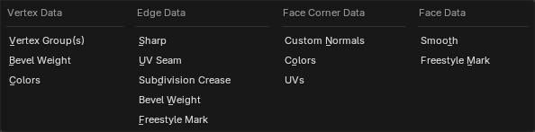

Transfer Mesh Data¶
Tham khảo
- Mode:
Object Mode
- Menu:
Transfer Mesh Data sao chép một loại dữ liệu nhất định từ active mesh sang các mesh đã chọn. Đó có thể là UV map, color attribute, custom normals, v.v.
Với mỗi phần tử (vertex/edge/face) trong mỗi mesh đích, operator sẽ tìm một hoặc nhiều phần tử tương ứng trong mesh nguồn, sau đó nội suy giữa giá trị của các phần tử nguồn đó.
Xem thêm
Panel Adjust Last Operation cung cấp các tùy chọn sau.
- Freeze Operator
Ngăn không cho việc thay đổi cài đặt khiến quá trình truyền dữ liệu chạy lại. Điều này hữu ích khi bạn đang chỉnh sửa nhiều cài đặt cùng lúc với geometry nặng.
- Data Type
Dữ liệu nào sẽ được truyền.

Các loại dữ liệu.¶
- Create Data
Thêm mọi data layer còn thiếu trên các mesh đích (ví dụ: tạo các vertex group bị thiếu).
- Mapping
Cách tìm phần tử nguồn tương ứng cho mỗi phần tử đích. Các tùy chọn khác nhau được giải thích trong phần Mapping bên dưới.
- Auto Transform
Nếu mesh nguồn và mesh đích không chồng lấn nhau trong không gian thế giới (world space), bạn có thể bật tùy chọn này để tự động tính toán một phép biến đổi. Tuy nhanh và tiện, nhưng bạn có thể thu được kết quả tốt hơn bằng cách tự tay xếp chúng chồng lên nhau.
- Object Transform
Có tính đến phép biến đổi trong không gian thế giới của object nguồn và object đích hay không. Khi bỏ chọn, operator sẽ xử lý như thể tất cả các object nằm ở cùng một vị trí và có rotation cùng scale mặc định.
- Only Neighbor Geometry
Chỉ xét những phần tử nguồn đủ gần với phần tử đích.
- Max Distance
Khoảng cách tối đa được phép giữa phần tử nguồn và phần tử đích (dành cho các kiểu ánh xạ không dựa trên topology).
- Ray Radius
Bán kính khởi đầu được dùng khi ray casting.
Với một số kiểu ánh xạ nhất định, operator thực hiện một loạt phép ray cast từ mỗi phần tử đích để tìm các phần tử nguồn tương ứng. Các phép ray cast này bắt đầu với bán kính đã chỉ định và tăng dần cho đến khi tìm thấy kết quả khớp hoặc chạm tới giới hạn.
Bán kính khởi đầu thấp sẽ cho kết quả chính xác hơn, nhưng nếu quá nhỏ thì hiệu năng kém hơn và cần phải tăng lên. Bán kính khởi đầu cao có hiệu năng tốt hơn, nhưng có thể dẫn đến các kết quả khớp chưa tối ưu.
Nhìn chung, hãy dùng bán kính thấp cho mesh nguồn dày đặc và bán kính cao cho mesh nguồn đơn giản.
- Islands Precision
Điều khiển phép tính nhằm ngăn một face đích nhận tọa độ UV từ các UV island khác nhau của nguồn (vùng được giới hạn bởi đường seam). Giữ giá trị 0.0 nghĩa là hoàn toàn không xử lý island, trong khi giá trị cao hơn làm tăng độ chính xác của kết quả với chi phí tính toán thêm.
Thông thường, các giá trị nhỏ như 0.02 là đủ để có kết quả tốt, nhưng nếu bạn truyền dữ liệu từ một nguồn rất nhiều polygon sang một đích rất ít polygon, bạn có thể phải tăng giá trị này lên khá nhiều.
- Source Layers Selection
Những layer nguồn nào sẽ được sao chép sang các mesh đích (ví dụ: chỉ vertex group đang hoạt động, tất cả vertex group, hoặc một vertex group cụ thể).
- Destination Layers Matching
Cách tìm layer đích cho một layer nguồn cho trước: theo tên hoặc theo thứ tự.
- Mix Mode
Cách kết hợp dữ liệu mới từ mesh nguồn với dữ liệu gốc trong các mesh đích.
- Replace
Nội suy giữa giá trị gốc và giá trị mới bằng Mix Factor.
- Above Threshold
Thay thế giá trị đích nếu nó lớn hơn hoặc bằng Mix Factor. Với dữ liệu nhiều thành phần như màu sắc, ngưỡng được so sánh với giá trị trung bình của các thành phần này.
Với các Data Types kiểu boolean như Freestyle Mark, bạn có thể dùng chế độ này để thực hiện phép logical AND: chỉ cần đảm bảo Mix Factor từ 0.5 trở lên, mesh đích sẽ chỉ giữ những edge/face đã đánh dấu mà vốn đã được đánh dấu và cũng được đánh dấu trong mesh nguồn.
- Below Threshold
Thay thế giá trị đích nếu nó nhỏ hơn hoặc bằng Mix Factor. Với dữ liệu nhiều thành phần như màu sắc, ngưỡng được so sánh với giá trị trung bình của các thành phần này.
Với các Data Types kiểu boolean như Freestyle Mark, bạn có thể dùng chế độ này để thực hiện phép logical OR: chỉ cần đảm bảo Mix Factor từ 0.5 trở lên, mesh đích sẽ có những edge/face đã đánh dấu mà vốn đã được đánh dấu hoặc được đánh dấu trong mesh nguồn.
- Mix
Trộn giá trị nguồn với giá trị đích, ví dụ thực hiện pha trộn alpha trong trường hợp color attribute. Sau đó, nội suy bằng Mix Factor.
- Add
Cộng giá trị nguồn vào giá trị đích, sau đó nội suy bằng Mix Factor.
- Subtract
Trừ giá trị nguồn khỏi giá trị đích, sau đó nội suy bằng Mix Factor.
- Multiply
Nhân giá trị nguồn với giá trị đích, sau đó nội suy bằng Mix Factor.
- Mix Factor
Hệ số nội suy giữa giá trị đích gốc và giá trị mới tính được. Nếu Mix Mode là Above Threshold hoặc Below Threshold, đây thay vào đó là giá trị ngưỡng.
Mapping¶
Topology¶
Đơn giản là khớp các phần tử dựa trên chỉ số (index) của chúng. Điều này yêu cầu tất cả các mesh phải có cùng số lượng phần tử và các phần tử đó được sắp xếp theo cùng một thứ tự. Phù hợp nhất khi mesh đích là một bản sao đã biến dạng của mesh nguồn.
Xem thêm
Sort Elements để đảm bảo các object có cùng thứ tự phần tử.
Các kiểu ánh xạ một-một¶
Các kiểu ánh xạ này luôn chỉ chọn một phần tử nguồn cho mỗi phần tử đích.
- Dữ liệu Vertex
- Nearest Vertex
Dùng vertex nguồn gần nhất.
- Nearest Edge Vertex
Dùng vertex nguồn gần nhất trên edge nguồn gần nhất (theo khoảng cách trung điểm).
- Nearest Face Vertex
Dùng vertex nguồn gần nhất trên face nguồn gần nhất (theo khoảng cách trung điểm).
- Edge Data
- Nearest Vertices
Dùng edge nguồn mà các vertex của nó gần với các vertex của edge đích nhất.
- Nearest Edge
Dùng edge nguồn có trung điểm gần với trung điểm của edge đích nhất.
- Nearest Face Edge
Dùng edge nguồn gần nhất trên face gần nhất (cả hai đều theo khoảng cách trung điểm).
- Dữ liệu Face Corner
Face corner là một vertex trong ngữ cảnh của một face. Khái niệm này được dùng phổ biến nhất trong UV map: mỗi face corner có thể có tọa độ UV riêng, nói cách khác, một vertex 3D có thể tương ứng với nhiều UV vertex (mỗi face một UV vertex).
- Nearest Corner and Best Matching Normal
Dùng corner nguồn gần với corner đích nhất và có split normal giống nhất.
- Nearest Corner and Best Matching Face Normal
Dùng corner nguồn gần với corner đích nhất và có face normal giống nhất.
- Nearest Corner of Nearest Face
Dùng corner nguồn gần nhất trên face nguồn gần nhất.
- Dữ liệu Face
- Nearest Face
Dùng face nguồn gần nhất (theo khoảng cách trung điểm).
- Best Normal-Matching
Phóng một tia từ tâm của face đích dọc theo normal của face đó và dùng face nguồn được tìm thấy theo cách này.
Các kiểu ánh xạ nội suy¶
Các kiểu ánh xạ này có thể khớp với nhiều phần tử nguồn và nội suy giữa các giá trị của chúng.
- Dữ liệu Vertex
- Nearest Edge Interpolated
Tìm điểm gần nhất trên edge nguồn gần nhất, rồi dùng điểm đó để nội suy giữa giá trị của các vertex của edge.
- Nearest Face Interpolated
Tìm điểm gần nhất trên face nguồn gần nhất, rồi dùng điểm đó để nội suy giữa giá trị của các vertex của face.
- Projected Face Interpolated
Chiếu vertex đích dọc theo normal của nó lên một face nguồn, rồi dùng điểm chiếu đó để nội suy giữa giá trị của các vertex của face.
- Edge Data
- Projected Edge Interpolated
Tìm các edge nguồn bằng cách chiếu từ một số điểm trên edge đích (mỗi điểm được chiếu dọc theo normal nội suy của các vertex của edge đích). Sau đó, nội suy giữa giá trị của các edge nguồn được tìm thấy theo cách này.
- Dữ liệu Face Corner
- Nearest Face Interpolated
Tìm điểm gần nhất trên face nguồn gần nhất, rồi dùng điểm đó để nội suy giữa giá trị của các corner của face.
- Projected Face Interpolated
Chiếu corner đích dọc theo normal của nó lên một face nguồn, rồi dùng điểm chiếu đó để nội suy giữa giá trị của các corner của face.
- Dữ liệu Face
- Projected Face Interpolated
Tìm các face nguồn bằng cách phóng tia từ một số điểm trên face đích dọc theo normal của face đích. Sau đó, nội suy giữa giá trị của các face nguồn này.